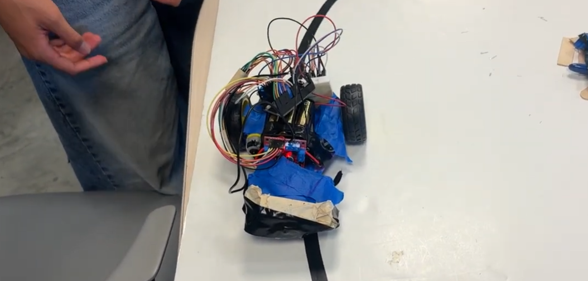

Testing Phase

In this section, we were working on our robot so that it would be able to follow the track path. There were so many issues with the way our robot car was set up. Since our chassis wasn't completely done printing at this point, we got rid of the tape that prevented light from coming in. The reasoning behind this was because the tape around the photoresistors (attached to the breadboard) wouldn't be able to get an accurate reading of the black vs white path if there's no light to highlight the difference.
Once we were able to fix the issue with the tape and the photoresistor readings, we had troubles with our motors. Since our robot car's components aren't soldered to each other, we had to use tape as a way to keep everything together. This was the most troublesome part. The tape wasn't very adhesive and didn't do a good job being stuck to itself. A good amount of our time was spent fixing the tape throughout the car. However, once we were able to get over that obstacle, our robot car was able to work decently fine with some minor tweaks with the PID.
The video below shows our car following the track. It was exciting to see our robot car follow the line, especially after so many trial and errors.